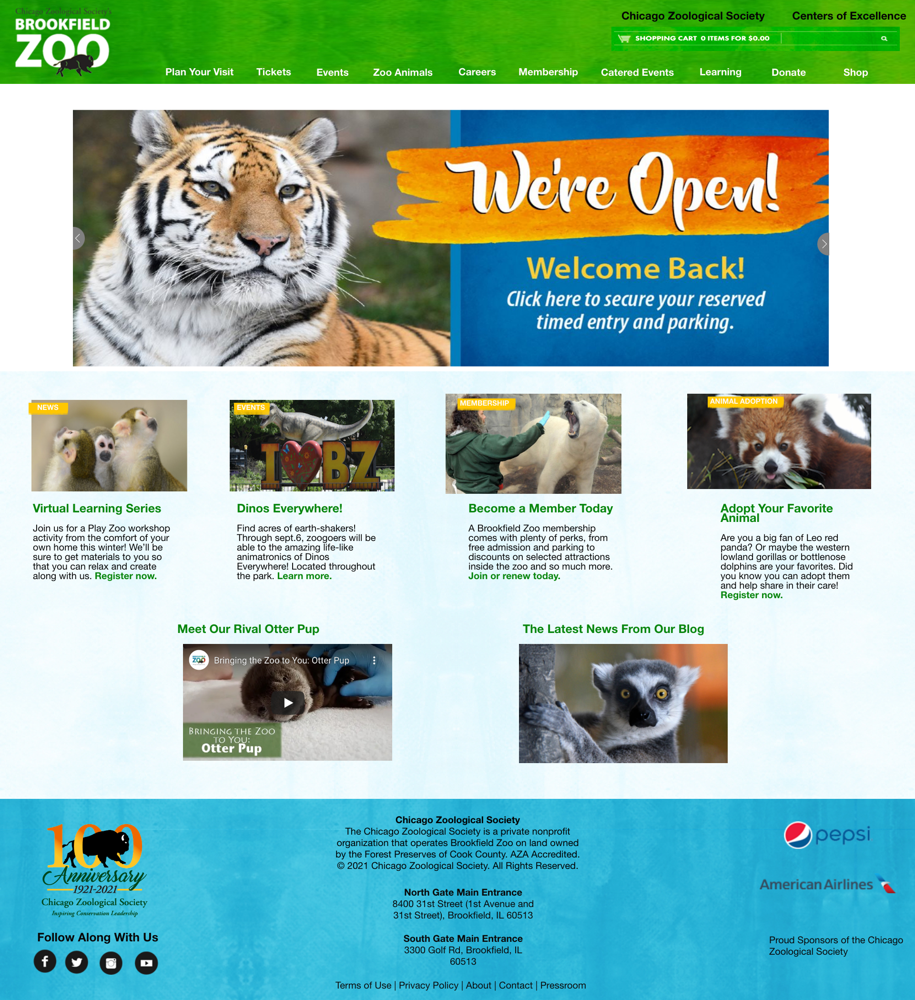

For usability, there are a lot of large file size images. I think that reducing the amount of images would help make this site work more fluently and load faster. Another solution could be to reduce the size of these images as shown in the wireframe. I Also think that reducing the amount of options to choose on the pull down menus would help. There are several options on each pull down and some are uncessary. For example on the donate page there are 10 different options in the pull down when you could have just made it 1 or 2 clean and more simple pages.
For upgrading accessibility I used a Web accessibility scanner known as Ace. Ace gave me a long list of suggestions, some of the most glaring wholes in the website in my opinion are the graphics. For screen readers there is no alt tag so for people who need to use screen readers this website will be very hard to enjoy since it is mostly images. I also used the WAVE accessibility tool and it said that the homepage has a low color contrast so I would either brighten up the images and fix the contrast in an image editing software like photoshop or redesign the page graphically with less pops and a more clean look.
